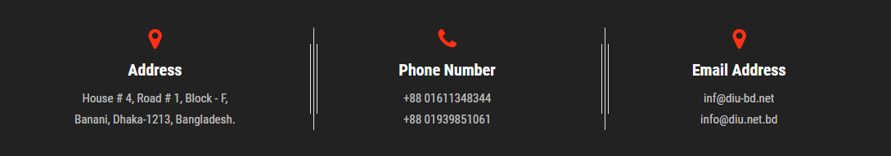

in all program 10% (40%) weaver
Candidates seeking admission in DIU must apply in prescribed application Form which can be collected on payment of Tk. 1000.00 Candidates having 2nd division or at least GPA 2.50 in both SSC & HSC examinations, or their equivalents are eligible to apply for admission into Honours program in Law,English, Sociology and Business Administration. For B.Sc in (Computer Science & Engineering), B.Sc. in Electrical, Electronics and Telecommunication Engineering and B.Sc (Civil Engineering) programs, candidate must have physics & Mathematics at their HSC level.For Bachelor of Pharmacy (B.Pharm.) program, candidates must have Biology & Chemistry at their HSC level.For LL.M (2 years), M.A English (2.5 Years), MSS Sociology (2 Years), MHRL, and MBA programs, the applicants must have at least Bachelor Degree with GPA-2.00 (minimum). For LL.M (2 Years), student must complete LL.B (Pass) Course.

© 2021 DIU. All rights Reserved. | Developed by: Al Amin Kabbo